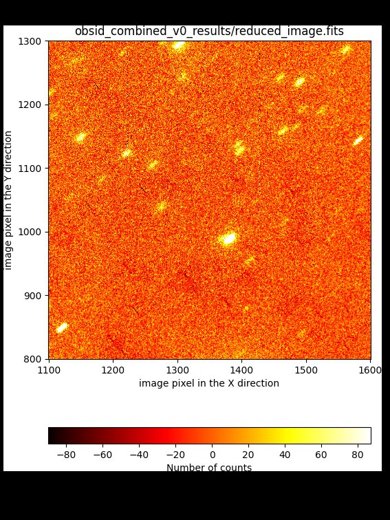
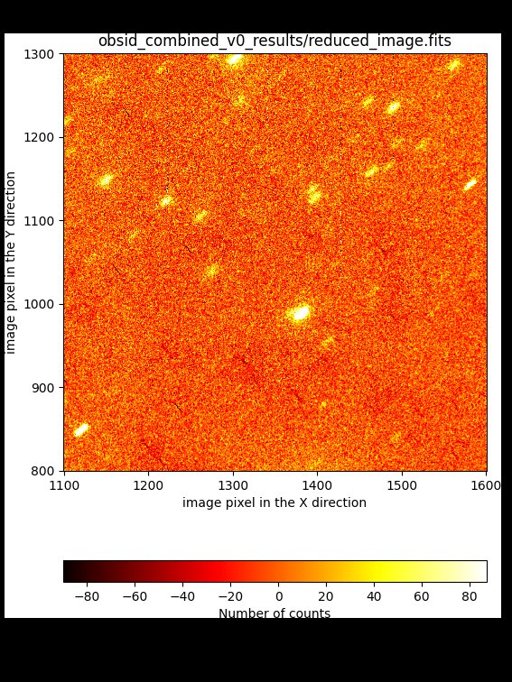
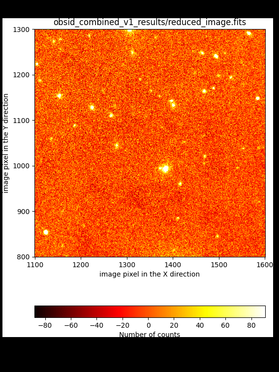
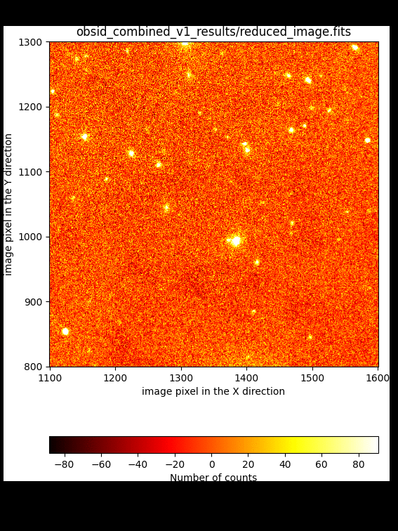
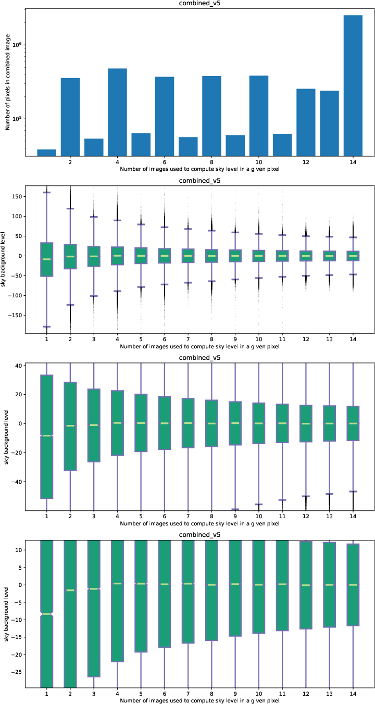
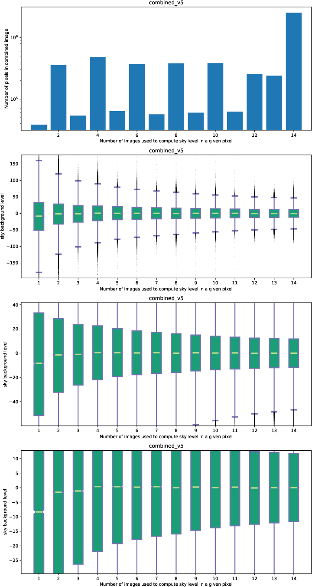

Improving the image combination¶
The image combination can be improve by tuning some of the parameters of the
recipe FULL_DITHERED_IMAGE (step 2 in the previous section).
In this sense, there is no need to repeat the basic reduction of the individual
exposures (step1).
As previously mentioned, two are the problems that we want to solve:
Improve the offsets between individual exposures: this can be achieved in several ways:
by setting the requirement
refine_offsets: True: in this case a cross-correlation between subimage regions around bright targets is carried out to derive refined offsets. See subsection Improving offsets (method #1) below.by providing an ASCII file with a list of offsets measured independently by the user and indicated with the requirement
offsets: user_offsets.txt. See subsection Improving offsets (method #2) below.by providing the same ASCII file with precomputed offsets (as in the previous item) and using, in addition, the cross-correlation method. In this case, both requirements
refine_offsets: Trueandoffsets: user_offsets.txtmust be set. See subsection Improving offsets (method #3) below.
Improve the sky background level estimation: the background level can be improved by:
generating an object mask and iterating the combination process. See subsection Improving the sky background (problem #1) below.
introducing an ad hoc fit to a low-order polynomial surface to the sky background. See subsection Improving the sky background (problem #2) below.
Improving offsets (method #1)¶
We can activate the use of 2D cross-correlation of subimages around bright
targets to obtain refined offsets. This method works only if the initial
offsets (either derived from the WCS information in the image headers or from
an external file provided by the user) are a reasonable approximation to the
refined values. To activate this option it it necessary to set the requirement
refine_offsets: True in the observation result file.
This option is already set in line number 120 of the file dithered_v1.yaml,
available in the downloaded package for this tutorial.
117 118 119 120 121 | requirements:
iterations: 0
sky_images: 0
refine_offsets: True
enabled: True
|
The refined version of the combined image is then obtained by executing numina again with this new observation result file:
(emir) $ numina run dithered_v1.yaml --link-files -r control.yaml
 

{kind=link}
Improving offsets (method #2)¶
An alternative to the use of the offsets computed from the WCS information in
the image header is to provide a two-column ASCII file with the measured
offsets between the individual images. The (arbitray) name of that file must be
provided through the requirement offsets:. For this tutoral, we are
providing such a file with the name user_offsets.txt. Note that this file
must be placed within the data subdirectory.
The observation result file dithered_v2.yaml is similar to the initial
dithered_v0.yaml file, with the inclusion of the new requirement (line
number 121):
117 118 119 120 121 122 | requirements:
iterations: 0
sky_images: 0
offsets: user_offsets.txt
refine_offsets: False
enabled: True
|
The contents of the ASCII file with the measured offsets is the following:
(emir) cat data/user_offsets.txt
822 907
730 660
555 863
620 998
895 741
545 674
708 811
830 911
735 666
561 868
626 1003
901 746
551 679
715 816
Execute numina to obtain the new version of the combined image:
(emir) $ numina run dithered_v2.yaml --link-files -r control.yaml


Improving offsets (method #3)¶
It is also possible to combine both the offsets provided by the user through an external ASCII file, as well as the cross-correlation method to improve those numbers.
The last lines of the new observation result file dithered_v3.yaml are the
following:
117 118 119 120 121 122 | requirements:
iterations: 0
sky_images: 0
offsets: user_offsets.txt
refine_offsets: True
enabled: True
|
Execute numina again with this new observation result file:
(emir) $ numina run dithered_v3.yaml --link-files -r control.yaml
The comparison with the result obtained by refining the offsets initially computed from the WCS information indicates that both methods lead to basically the same result.

Note
The conclusion of these comparisons is that the user can rely on the offsets computed from the WCS information in the image headers as a reasonable initial guess, but that these offsets need to be refined. Unless something is really wrong with that WCS information, the user probabily will not need to measure the offsets manually. Anyway, that option is always there just in case it is necessary.
Improving the sky background (problem #1)¶
The first obvious way to improve the background computation is by masking the
objects present in the image. This masking process requires an initial object
detection, that must be carried out on the result of an initial combination.
For that reason, this masking requires to set iterations to a number larger
than zero.
In addition, the user can indicate that the sky signal at each pixel must be computed from the signal at the same pixel in a predefined number of images (close in observing time).
The observation result file dithered_v4.yaml includes both options:
117 118 119 120 121 | requirements:
iterations: 1
sky_images: 6
refine_offsets: True
enabled: True
|
Note that refine_offsets: True is also being used, but without setting
offsets with an external ASCII file (i.e., the initial offsets will be
computed from the WCS information in the image headers).
Execute numina to start the reduction including object masking:
(emir) $ numina run dithered_v4.yaml --link-files -r control.yaml
It is useful to subtract the new result from the one derived previously:
(emir) $ numina-imath obsid_combined_v1_results/result_image.fits - \
obsid_combined_v4_results/result_image.fits difference_v4.fits
 

{kind=link}
Improving the sky background (problem #2)¶
In all the previous examples, the combined images always exhibit variations in the sky background that are clearly visible in the image borders. The reason for that is that some individual exposures (in particular the first two individual images), have a wrong image background.
The problem is more severe in the regions where the number of images used for the combination is lower:


It is also possible to examine the sky-subtracted individual images (files
ending in _rfs_i?.fits within the work subdirectories):
{kind=link}
One possibility is to remove the first two images from the list of images to be reduced. This is undesirable because it obviously reduces the depth of the combined image.
Another option is to apply an ad hoc correction, by fitting for example a
low-order 2D polynomial surface to the masked (i.e. removing objects)
sky-subtracted images. This option can be activated by using the requirement
nside_adhoc_sky_correction. We have incorporated that option in the
observation result file dithered_v5.yaml, which also includes an iteration
to generate an object mask:
117 118 119 120 121 122 | requirements:
iterations: 1
sky_images: 6
refine_offsets: True
nside_adhoc_sky_correction: 10
enabled: True
|
Since the problem with the sky background in different for each quadrant of the
EMIR detector, the value of nside_adhoc_sky_correction indicates the
number subdivisions (in X and Y) in which each quadrant is subdivided. In this
case we are using a pattern of 10 x 10 regions in each quadrant. The median
value in each of these 100 subregions is computed (masking pixels affected by
objects) and a smooth spline surface is fitted to that collection of points.
(emir) $ numina run dithered_v5.yaml --link-files -r control.yaml
 

{kind=link}
In the last combination (v5) the sky background level is much flatter around
zero, except for those pixels in the combined image where only one single
exposure is available. By looking at the file result_i1_npix.fits it is
possible to check that those pixels are just at the borders of the combined
image.